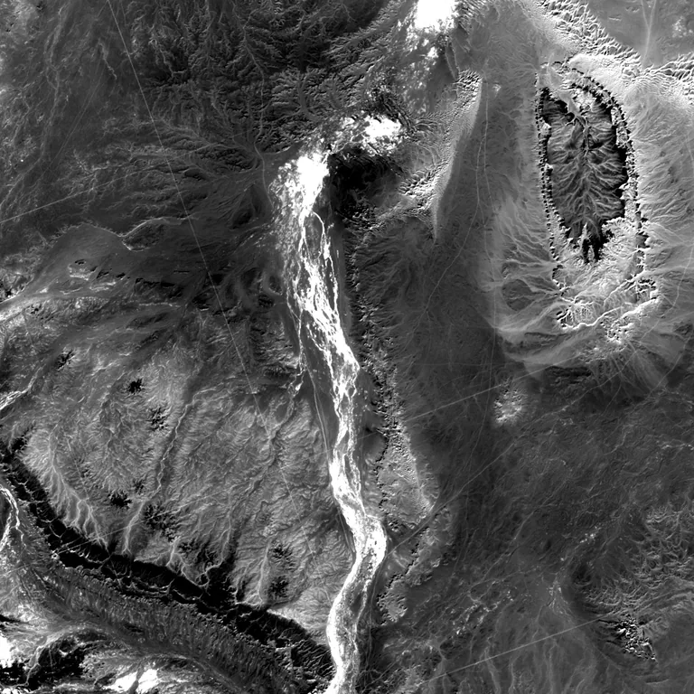

Benchmark / Near-lossless / l8-oli-pan / l8-oli-pan-09
l8-oli-pan-09
sahara · 2023-01-17 · sample details

Metadata
| id | l8-oli-pan-09 |
|---|---|
| source | LANDSAT/LC08/C02/T1 (Landsat Collection 2 Level-1) |
| asset | LANDSAT/LC08/C02/T1/LC08_194043_20230117 |
| crs | EPSG:32631 |
| transform | 391807.5 15.0 0.0 2773342.5 0.0 -15.0 |
| datetime_start | 2023-01-17T10:16:58.306Z |
| datetime_end | 2023-01-17T10:16:58.306Z |
| bands | B8 |
| shape | 1024x1024 |
| dtype | uint16 |
| unit | DN |
| scale | 1 |
| offset | 0 |
| nodata | 0 |
| input_sha256 | d16da7e35a37ba23459d0c757e022cc6cb935511a1e9836a95c7f70b5d00f3ef |
| site | sahara |
| regime | bare |
| lon | 2.004 |
| lat | 25.003 |
| spacecraft | LANDSAT_8 |
| sensor | OLI_TIRS |
| product_id | LC08_L1TP_194043_20230117_20230131_02_T1 |
| wrs_path | 194 |
| wrs_row | 43 |
| acquired_m | 15 |